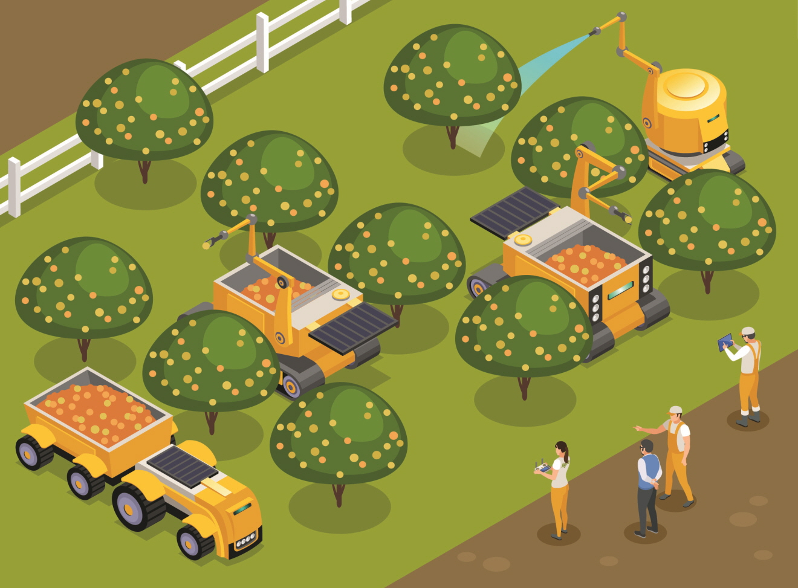

과수원이란?
과수원은 사과, 포도와 같은 과일을 재배하는 밭을 총칭한다. 과일재배의 목적은 품질이 좋은 과실을 매해 다량 으로 생산하여 경제적 수익을 올리는 데 있다.

스마트 과수란?
과수원의 개념에 원격관리 기술 등이 추가되었다고 생각하면된다. 한마디로 PC또는 모바일을 통해 온도와 습도, 기상상황 등을 모니터링 하고 원격으로 관수, 병해충 관리 등이 가능한 과수원이다.
추가 설명
정의에서 말한 바와 같이 과수원의 개념에 다른 기술이 추가된 것, 그것이 바로 스마트 과수원이다. 여기서 다른 기술이란 ICT(정보통신기술)로 이 ICT를 과수원에 접목시킨 것이 바로 스마트 과수원이다. 그렇다면 이 ICT기술로 무엇을 하는지 간단하게 이야기 해보겠다.
우선 첫 번째로 자동화와 스마트폰 원격 제어이다. 센서값에 따른 자동 설비(관수모터 등) 제어가 가능하며 유사시 스마트폰으로 원격 조종도 가능하다. 이는 단순하고 반복적인 노동시간을 줄여 잉여시간을 활용 가능하게 한다.
두 번째는 당도 등 생육데이터 관리이다. 휴대용 당도 측정기를 통해 수집된 데이터를 실시간 서버전송으로 당도분석이 가능하다. 이는 고품질과일의 재배와 적기수확으로 과일의 명품화를 도와준다.
세 번째는 통합 인터넷 생육관제시스템이다. 농장 센서데이터 및 영농일지 DB활용 및 그래프 표시, 당도와 환경, 토질 등을 체계적으로 분석 할 수있다. 이는 비교, 분석을 통한 최적의 재배로 생산성과 품질을 향상 시켜준다.